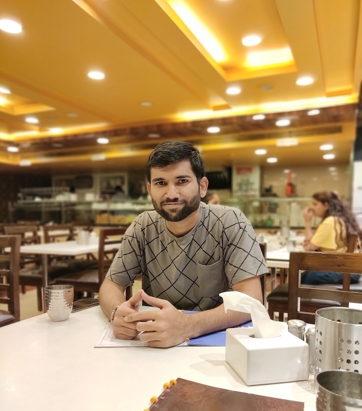

Kapil Goyal
Senior
Senior
Software Engineer
Know
About me
Senior Software Engineer | Javascript, Typescript, ReactJS, NextJS,
VueJS
I am a Senior Software Engineer with 6+ years of experience building
scalable, high-performance web platforms. Specialist in
React/Next.js ecosystems, frontend architecture, and performance
optimization for developer-facing and enterprise products. Proven
track record of leading cross-functional initiatives, accessibility
compliance and infrastructure efficiency at scale.

Experience
-
February 2024 - Present
Senior Software Engineer
HackerRank
-
Lead Engineer - Engage
Lead frontend engineer for Engage team’s Next-GenUI using Next.js and RTK Query, owning design, performance, and delivery. -
Question Creation Flow
Designed and implemented an optimized project-based “Question Creation Flow”, improving creation time by 35% and increasing platform adoption by 40% -
Infrastructure Optimizations (Cost)
Designed and implemented a custom Pause/Resume VM lifecycle, reducing operational costs by 70% with no UX impact. -
Monorepo & Build System Improvements:
Led the migration of shared component libraries to a Monorepo architecture, reducing the primary bundle size by 80% directly impacting Core Web Vitals.
-
-
February 2022 - January 2024
SDE-II
HackerRank
-
Platform Improvements
Identified bundle size bottleneck in the Design system and implemented tree-shaking and split-chunk strategies. Identified rendering issues in the main HRW pages and led the thorough analysis of the root cause and implemented optimizations to improve the performance of the pages. -
Accessibility Compliance
Spearheaded the accessibility overhaul for full-stack assessments, achieving WCAG 2.1 Level AA compliance and mitigating legal compliance risks. -
Cross Product and Customer Success
Partnered with Product and Customer Success teams to identify high-friction user issues, translated customer pain points into technical requirements.
-
-
February 2021 - February 2022
SDE-II
Original4Sure
-
Internal Admin App
Architected and developed an Internal Admin App from scratch, enabling comprehensive Role-Based Access Control (RBAC) -
White Label Apps
Created Several Web apps for clients using VueJS and ElectronJS -
Fronted Architecture
I was one of the core Fronted Developers to develop and manage several Frontend Projects using VueJS
-
-
June 2019 - Feb-2021
Software Developer
OlxPeople
- Worked on ReactJS, React-Native frameworks along with angularJS-1.x and NodeJS
-
Okta Sign-Sign-On Integration
Refactored login flow from AngularJS-1.x and NodeJS to Server-less using ReactJS and Integrated Okta SSO to replace Google Oauth2 Login Flow -
Workflows
A project to create dynamic forms using server side rendering on NodeJS with socket connection. This project was capable to reduce development time to generate dynamic forms. Server created using NodeJS and hosted using Kubernetes and Docker. - Developed multiple generic components and directives to reduce development time
- Contributed to multiple projects to achieve business goals and enhance product efficiency, including developing a Campaign creation project from scratch.